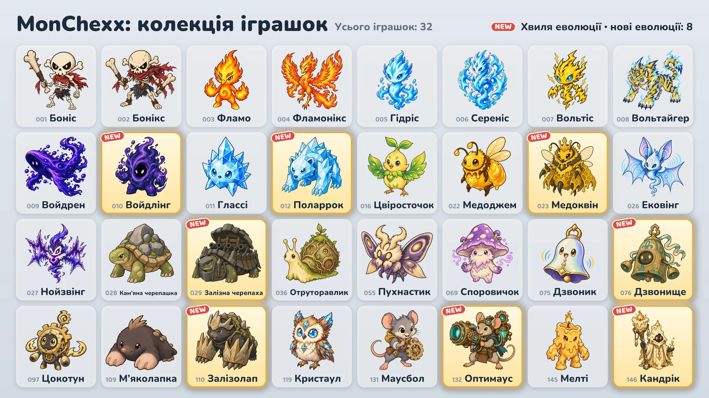

17 жовтня до гри додаються вісім нових еволюцій.

Вісім нових еволюцій
- Войдлінг: базова форма — Войдрен · Танк / Боєць
- Поларрок: базова форма — Глассі · Танк / Боєць
- Медоквін: базова форма — Медоджем · Підтримка / Стрілець
- Залізна черепаха: базова форма — Кам’яна черепашка · Танк
- Дзвонище: базова форма — Дзвоник · Танк
- Залізолап: базова форма — М’яколапка · Танк / Асасин
- Оптимаус: базова форма — Маусбол · Стрілець
- Кандрік: базова форма — Мелті · Підтримка / Стрілець
Як отримати
- Автомати з іграшками (подія): Під час події (17–24 жовтня) у кожному автоматі, крім двох крайніх у ряду, є одна з нових еволюцій разом із двома іншими іграшками. Після завершення події нові еволюції потрапляють в автомати так само часто, як і решта іграшок.
- Обмін іграшок: 10 запасних іграшок можна обміняти на іграшку на вибір («Обмін на вибір»), а 3 — на випадкову іграшку («Обмін навмання»).
- Набори іграшок: Нові еволюції теж можуть випасти з наборів.
Як використовувати еволюції
- Еволюціоновані іграшки збираються окремо, і їх можна взяти в команду одразу після отримання.
- На екрані «Збери команду» можна вибрати іграшку й змінити її форму кнопкою Базова або Еволюція.
- У команді може бути лише одна іграшка з кожної лінії еволюції.
- Рівень еволюціонованої іграшки зростає окремо від рівня базової іграшки.
Нові іграшки
Значення у відсотках від атаки, магічної сили або максимального здоров’я зростають разом із рівнем іграшки.
 Войдлінг · Танк/Боєць · Дальність: 1 клітинка
Войдлінг · Танк/Боєць · Дальність: 1 клітинка
- Поглинання порожнечі: Збільшує власне максимальне здоров’я на суму 200% магічної сили та 3% початкового максимального здоров’я й відновлює стільки ж здоров’я. Потім завдає всім ворогам не далі ніж 1 клітинка від себе магічної шкоди в розмірі 10% власного максимального здоров’я. Коли його максимальне здоров’я сягає 3-кратного початкового, до цього радіуса додається 1 клітинка, а далі стільки ж із кожним наступним кратним. Додане максимальне здоров’я зберігається до кінця бою.
- Бенкет порожнечі: Щоразу, коли ворог не далі ніж 4 клітинки застосовує активне вміння, отримує 10 мани.
 Поларрок · Танк/Боєць · Дальність: 1 клітинка
Поларрок · Танк/Боєць · Дальність: 1 клітинка
- Удар інею: Завдає поточній цілі фізичної шкоди в розмірі 240% атаки й заморожує її на 1,5 с. Заморожений ворог не діє й не отримує ману. Ворогам у конусі, що розходиться за ціллю на 2 клітинки, завдає фізичної шкоди в розмірі 180% атаки й накладає на них іній, що на 6 с знижує їм швидкість атаки на 15%.
- Кришталева шкіра: Отримувана магічна шкода зменшується на 20%. Це діє й на періодичну магічну шкоду; зменшення рахується після магічного опору.
 Медоквін · Підтримка/Стрілець · Дальність: 3 клітинки
Медоквін · Підтримка/Стрілець · Дальність: 3 клітинки
- Королівське желе: Лікує всіх своїх робочих бджіл на 10% їхнього максимального здоров’я й на 3 с підвищує їм швидкість атаки на 200%. Потім, якщо робочих бджіл менше за максимум, викликає на порожні клітинки поруч нових робочих бджіл; їхня кількість — 1.
- Робочий рій: Максимальна кількість робочих бджіл — 3. Характеристики бджіл зростають разом із рівнем Медоквін, а ефекти для союзників з обмеженою кількістю цілей їх не обирають. Щосекунди кожна бджола отримує магічну шкоду в розмірі 4% власного максимального здоров’я. Коли Медоквін падає, бджоли впадають у шал: і завдана, і отримана ними шкода множиться на 2.
- Здоров’я бджоли 60 · Атака бджоли 40 (Lv.1)
 Залізна черепаха · Танк · Дальність: 1 клітинка
Залізна черепаха · Танк · Дальність: 1 клітинка
- Круговий обстріл: Стріляє з гармати, починаючи з напрямку, куди дивиться, і щоразу повертаючись проти годинникової стрілки на наступний напрямок; кількість снарядів — 6. Кожен снаряд завдає першому ворогові не далі ніж 2 клітинки у своєму напрямку фізичної шкоди в розмірі 500% атаки. Інтервал між снарядами — 0,5 с; він змінюється залежно від швидкості атаки. Під час стрільби не рухається, а в разі оглушення чи замороження решту снарядів не випускає. До кінця обстрілу не отримує мани.
- Фортечний панцир: За кожного ворога не далі ніж 1 клітинка від себе власна броня та магічний опір зростають на 35.
 Дзвонище · Танк · Дальність: 1 клітинка
Дзвонище · Танк · Дальність: 1 клітинка
- Удар дзвона: На 2 с дає собі щит у розмірі 300% магічної сили й провокує всіх ворогів не далі ніж 2 клітинки від себе. Спровоковані вороги в цей час атакують лише його й не можуть почати застосовувати вміння. Протягом того самого часу щоразу, отримуючи базову атаку ворога, завдає всім ворогам не далі ніж 2 клітинки від себе магічної шкоди в розмірі 25% шкоди цієї атаки до зменшення бронею та щитом. До кінця Провокації не отримує мани.
- Резонанс: Щоразу, коли інший союзник не далі ніж 2 клітинки застосовує активне вміння, відновлює собі здоров’я в розмірі 50% магічної сили.
 Залізолап · Танк/Асасин · Дальність: 1 клітинка
Залізолап · Танк/Асасин · Дальність: 1 клітинка
- Підземний штурм: Заривається в землю, знімаючи з себе всі ослаблення, рухається зі швидкістю, у 3 раза більшою за швидкість руху, до порожньої клітинки, біля якої не далі ніж 1 клітинка найбільше ворогів, і завдає всім ворогам не далі ніж 1 клітинка від себе фізичної шкоди в розмірі 500% атаки. Під землею його не можна атакувати.
- Кам’яні кігті: Броня зростає на 20% власної атаки.
- На початку бою має 0 мани.
 Оптимаус · Стрілець · Дальність: 4 клітинки
Оптимаус · Стрілець · Дальність: 4 клітинки
- Лазерна гармата: Протягом 1,5 с заряджає лазерну гармату, спрямовану в бік поточної цілі, що стоїть не далі ніж 4 клітинки, а потім стріляє лазером завширшки 1 клітинка до краю корту й завдає всім ворогам у зоні пострілу магічної шкоди в розмірі 1000% атаки. Напрямок визначається на початку заряджання; у разі оглушення чи замороження під час заряджання постріл скасовується.
- Схема розігріву: Кожна базова атака підвищує власну швидкість атаки на 20% без обмеження; приріст скидається після застосування активного вміння.
 Кандрік · Підтримка/Стрілець · Дальність: 3 клітинки
Кандрік · Підтримка/Стрілець · Дальність: 3 клітинки
- Невгасиме полум’я: На 5 с накладає мітку на союзника з найменшим поточним здоров’ям (крім себе). Також дає союзнику з міткою щит на той самий час у розмірі 200% своєї магічної сили. Якщо пряма шкода мала б звалити союзника з міткою, бере на себе замість нього 200% цієї шкоди, а союзник цієї шкоди не отримує. Мітка може бути лише одна, і від падіння через періодичну шкоду вона не рятує.
- Танення воску: Отримана пряма шкода, що лишилася після щита, віднімається від здоров’я не одразу, а частинами протягом 4 с. Періодичну шкоду отримує одразу.
Рейтингові матчі та значки
- Суперники в рейтингових матчах теж використовують нові еволюції.
- Вісім нових еволюцій не зараховуються до значка «Колекція сезону 1».
- Значок «Знавець еволюцій» можна отримати, маючи 5 різних еволюціонованих іграшок. Тепер у грі 13 еволюціонованих іграшок.
Зміни балансу всіх іграшок можна переглянути в описі оновлення «Баланс і бойова система».